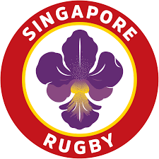
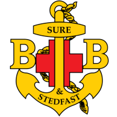
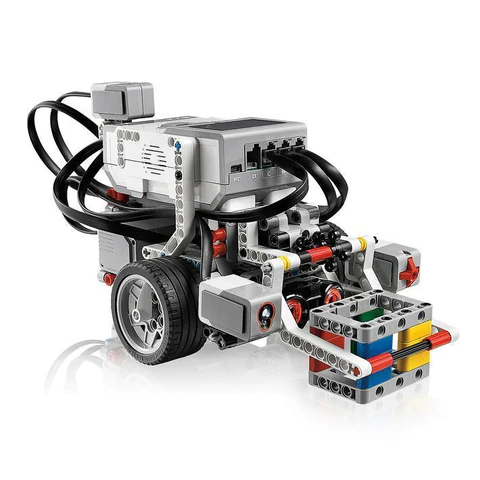

A Quick Background of me
- 2012-2019 : Student of Anglo Chinese School (Primary)
- 2019-2021 : Student of Anglo Chinese School (Barker Road)
- 2022-20XX : Student of Singapore Polytechnic

Vice Captain of ACS(P) Rugby Team
Appointed as the team's vice captain to form strategies for the team as well as to keep the team's moral high. First leadership position I held and I learnt how to descalate conflicts and understand people better.
Admin & Publication NCO for 12BR Boys' Brigade

Appointed as the Admin & Publication NCO to ensure that activties run smoothly by accounting for logistics and head-count. As well as social media publication of what our BB company did where I learnt many media arts design tips

Vice Chairman of ACSBR Robotics Team
Appointed as the Vice Chairman. In addition to working with other EXCO members to get task such as VIA planing and attendance taking completed, I had to organise weekly traning session and plan for upcoming competition.

 ☰
☰